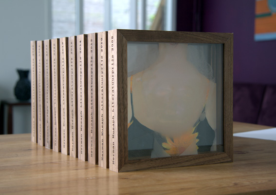

Opdracht van LEO Pharma (in 2014, 2015 en 2016), een internationaal pharmaceutisch bedrijf, voor het maken van twee awards bestemd voor prijswinnende dermatologen. Formaat: 20cm x 20cm x 6,5cm.
De portretten van de prijswinnaars zijn geschilderd in olieverf op padoek hout, met daarvoor een glasplaat gemonteerd waarop in goudverf een molecuulstructuur is geschilderd. Deze werpt een schaduw op het portret. Aan de zijkanten staat de tekst met de naam van de prijs, en de naam van de winnaar. Op de achterzijde is het logo van LEO Pharma geschilderd.
Achterzijde
Mondgeblazen fles van laboratoriumglas, gezandstraald. Met eigengemaakte likeur, vilten hoes en bijbehorend verhaal (in een klein boekje aan de hals van de fles) in opdracht van vereniging voor dermatologie. Het is bestemd voor ereleden van de vereniging.
Oplage 8 stuks
Prijsjsobjecten i.s.m. http://www.atelierjanvanhees.nl voor 'De Herman Musaph Literatuurprijs'
Object bestaande uit twee glasplaten met gelaserd portret en schildering in olieverf, gevat in Amerikaans notenhout waarin tekst gelaserd is.
Oplage 10 stuks


Relatiegeschenk in opdracht van Human inferences i.s.m. Simone van Bakel. Vervormde/ingedeukte blokjes in keramiek met olieverfportretten.